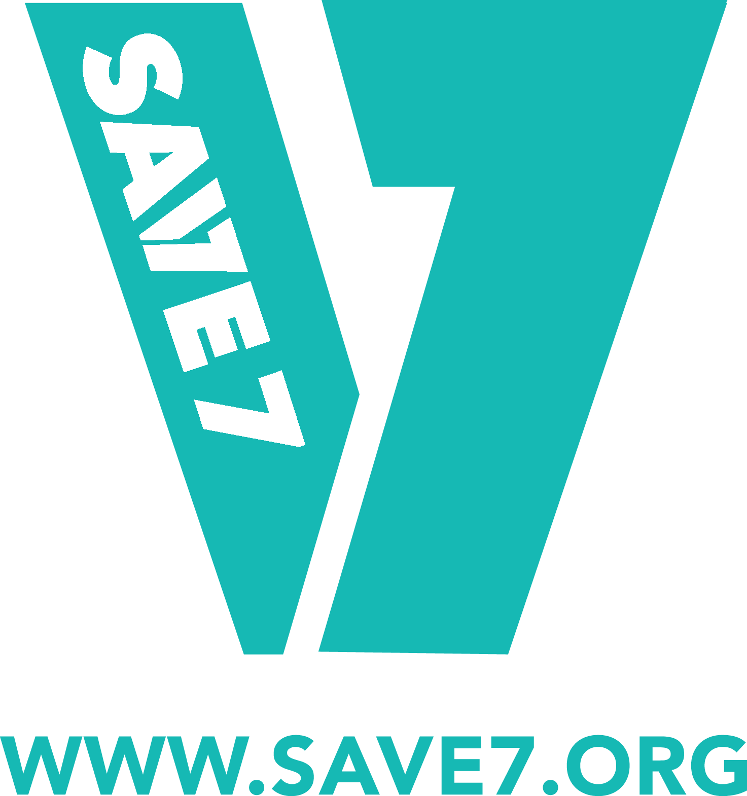

CERTIFICATE OF COMPLETION
Thandiwe
Nkosi
Nkosi
Has completed the following Level of the Save7 organ donation course:
Beginner Level




| Element | Foreground | Background | Ratio | Verdict |
|---|